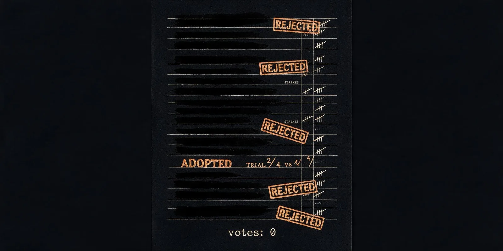

Living Playbooks

Run 5's failure had a clear cause: lessons were canonized without ever being tested. If a lesson has to survive an A/B trial before it's allowed into the culture — and can be demoted later if it stops earning its keep — will that stop the colony from inheriting false beliefs?
The lessons pipeline was rebuilt as a real epistemic process: observation → pattern → verified playbook → living document. A lesson candidate only forms after 5 or more instances of the same crash (not 2, as in Run 5). Each candidate is then trialed — 4 children with the lesson injected vs. 4 without, judged on survival — before it's canonized. Ties and losses are rejected outright. Canonized lessons carry an evidence counter and are retired if their crash-family rises again 5 times on their watch.
A full belief lifecycle: candidacy → trial → canonize-or-reject → retirement. Nothing about the arena, model, or engine changed from Run 5.
Coverage, best Elo, tool count, total smoke crashes (compared directly against Run 5's 50), and how many candidate lessons were trialed, accepted, or rejected.
Coverage held at 58.3%, best Elo reached 1061, the library grew to 9 tools — the most of any run — and total crashes fell to 33, down 34% from Run 5's 50. Only one lesson made it to canonization, versus Run 5's three.
Crash counts split into halves tell the real story: 15 in generations 1–50, 18 in 51–100 — essentially flat — against Run 5's accelerating 19 → 31. Total deaths were down by a third against the same model and the same base prompt.
The trial mechanism visibly did its job: a candidate lesson ("never reassign wallSet…") went to its A/B trial and children following it crashed more than the control group — 4 out of 4 versus 3 out of 4. It was rejected. Run 5's pipeline would have canonized that exact candidate into scripture. This is the precise failure mode from Run 5, caught by the exact mechanism its autopsy called for.
Performance didn't beat Run 4 — 58.3% coverage and 1061 Elo here, versus 66.7% and 1066 there. The living-playbook system bought safety and epistemic hygiene, not raw exploration. And no retirement fired this run — nothing was canonized early enough in the run to accumulate the strikes needed to trigger a demotion, so that half of the mechanism stayed untested in the wild.
The honest ledger says the epistemology has a cost, not just a benefit, and 100 generations barely gives a 5-sighting-threshold, trial-gated system room to move. The real question this hands off: does science actually win, given enough time? That needs a much longer run — and a real credulous control to compare it against.
In one line: a colony that went machine (Run 0) → mind (Run 3) → memory (Run 4) → religion (Run 5) → science (Run 6).
152 API calls · $0.16–$0.21 (gpt-oss-120b via Groq).
Series through Run 6: 967 calls · $3.73–$4.48. Call counts are exact, straight from each run's metrics file. Costs are a range rather than a figure, for a reason worth stating: the provider bills cached input tokens at half price and does not report the cached fraction in the API response — it appears only in the console dashboard — so the upper bound prices every input token as uncached and the lower bound prices all of them as cache hits. A sampled dashboard minute showed 68% of input tokens were cache hits, which puts the truth nearer the bottom of each range. Token counts are measured exactly from Run 8 onward; earlier runs additionally reconstruct tokens from Run 8b's measured per-call profile (3,642 in / 1,348 out), because the usage field was discarded before it was ever written down. A bound is not a measurement and a reconstruction is neither, so both are labelled.
Raw receipts — every archive, lessons ledger, metrics file, and match replay: github.com/godfreystorm/ratchet-lab